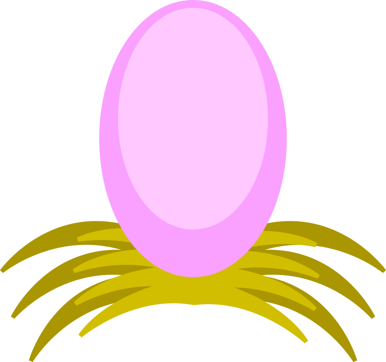
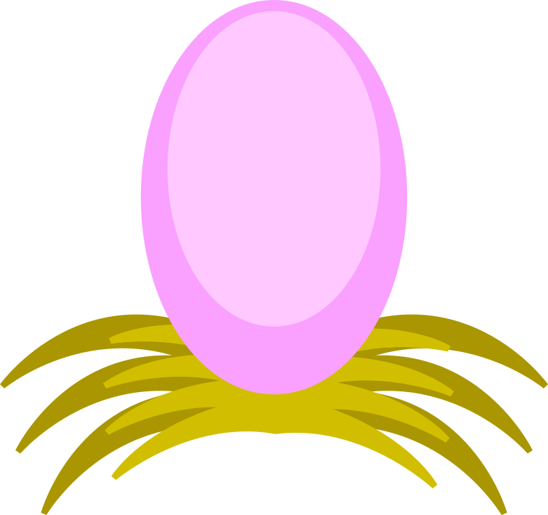
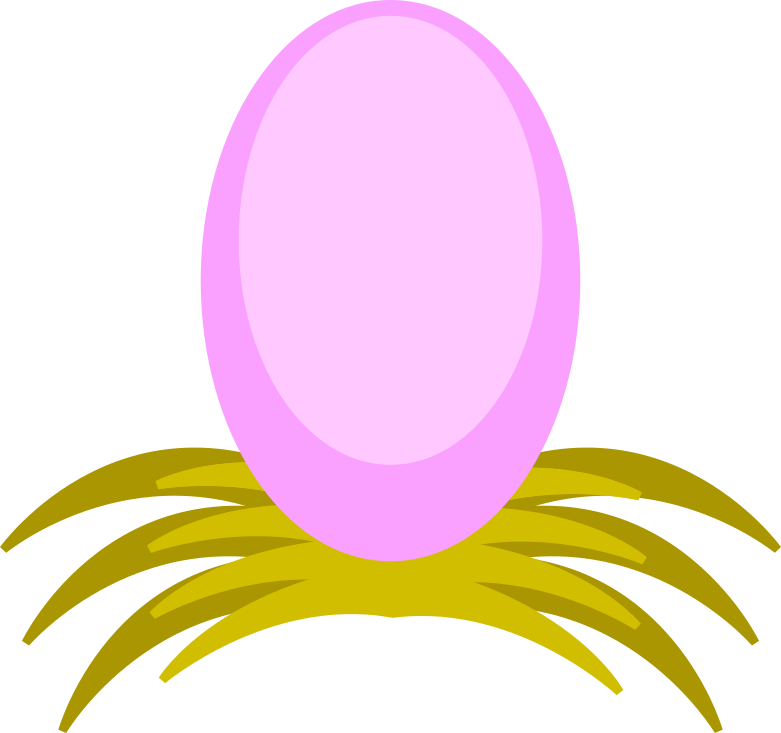
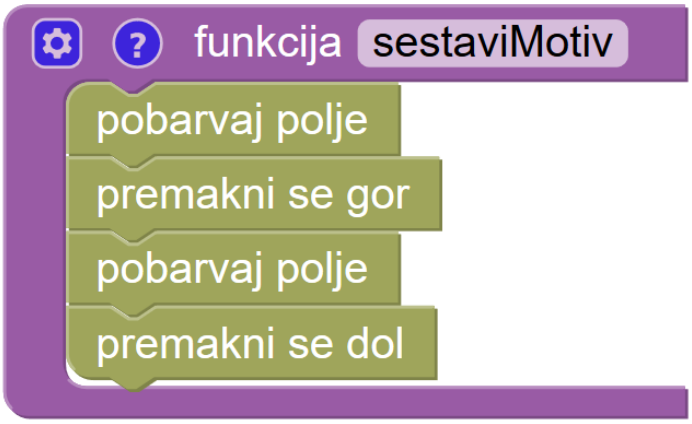
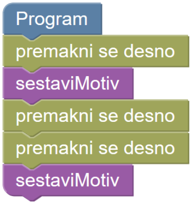

Zmajček barva vzorce
 


Napiši zmajčku navodilo, po katerem bo pobarval vsa označena polja.
Nalogo lahko rešiš brez prevelikega števila blokov, samo če ustvariš funkcijo. Ustvarjanje funkcije je podobno ustvarjanju lastnega bloka, ki ga potem lahko uporabiš na različnih mestih v tvojem programu.
To je primer funkcije, ki pobarva prvo polje, nato še polje nad prvim in potem vrne zmajčka na začetno mesto:

def kaktus(): pobarvaj() gor() pobarvaj() dol()
In to je primer programa, ki funkcijo zgoraj uporablja.

desno() kaktus() desno() desno() kaktus()
Ker nočeš prekoračiti dovoljenega števila blokov, uporabi zanke.
V tej verziji razmisli o uporabi večih funkcij zaradi varčevanja z bloki! Novi blok 'funkcija' lahko poimenuješ, kot želiš.